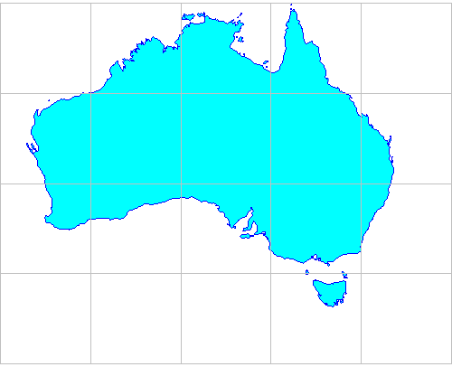
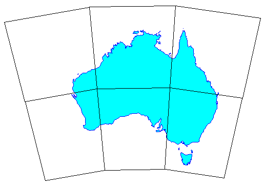
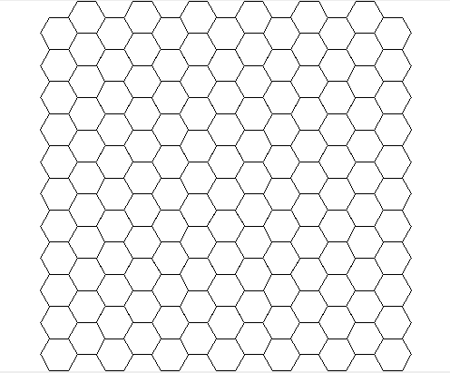
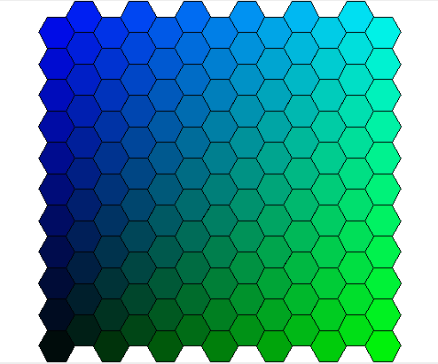
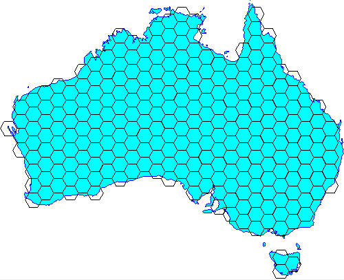
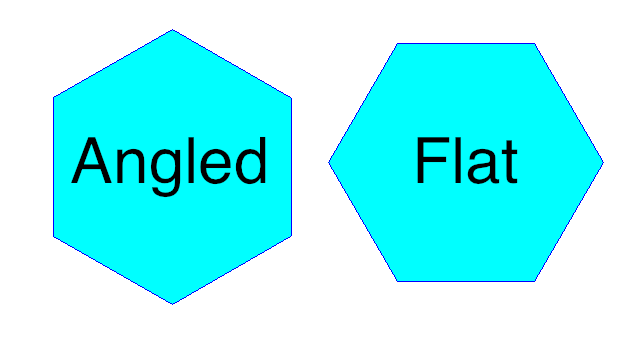
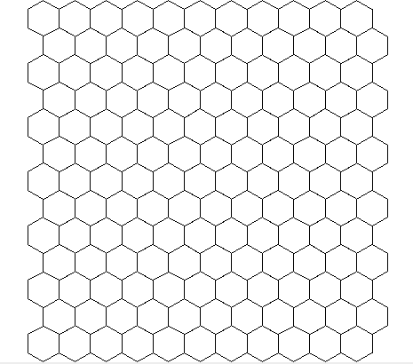

Vector grids¶
The GeoTools vector grid classes make it easy to create vector grids (also known as lattices) consisting of either polygon or line elements, each of which is represented as a SimpleFeature. Simple grids can be generated easily using either the Grids or Lines utility classes, while lower level classes are availble for when more control over grid layout and attributes is required.
Note: Grids are currently constructed in memory with the whole grid being built at one time.
Maven:
<dependency>
<groupId>org.geotools</groupId>
<artifactId>gt-grid</artifactId>
<version>${geotools.version}</version>
</dependency>
Polygon grids¶
The Grids utility class provides methods to create grids of rectangular or hexagonal elements.
Creating square grids¶
The easiest way to create a basic grid is with the static methods in the Grids utility class. This example creates a lat-lon grid with squares 10 degrees wide to display over a map of Australia:
ReferencedEnvelope gridBounds = new ReferencedEnvelope(
110.0, 150.0, -45.0, -5.0, DefaultGeographicCRS.WGS84);
SimpleFeatureSource grid = Grids.createSquareGrid(gridBounds, 10.0);
Here is the resulting grid:
Grids for display in different map projections¶
The grid created in the previous section consists of SimpleFeatures, each of which has a minimal polygon, ie. one represented by four corner vertices. This is fine if you only need to display it in the one map projection. But say we need to display the above map in EPSG:4462 (Lambert’s Conformal Conic for Australia). The image below shows a square grid created in WGS84 (lat-lon) and then transformed into Lambert’s Conformal Conic. Because we only have vertices for the grid cell corners the cell edges appear straight rather than curved. We’ve used 20 degree wide grid squares in this example to make this effect obvious:
We can achieve a much better result by creating a grid where the polygons are densified by inserting additional vertices along each side, so that when they are reprojected their edges approximate curves much better:
ReferencedEnvelope gridBounds = new ReferencedEnvelope(
110, 160, -45, -8, DefaultGeographicCRS.WGS84);
double squareWidth = 20.0;
// max distance between vertices
double vertexSpacing = squareWidth / 20;
SimpleFeatureSource grid = Grids.createSquareGrid(gridBounds, squareWidth, vertexSpacing);
Creating hexagonal grids¶
The Grids class also has methods to create hexagonal grids. These have the property that all six neighbours of a grid element lie at an equal distance, in contrast to rectangular grids where the diagonal neighbours are more distant than the orthogonal neighbours. This makes hexagonal grids useful for analysing contagious spatial processes such as disease spread, wildfire, urban development and animal movement.
Creating a basic hexagonal grid is simple:
ReferencedEnvelope gridBounds = new ReferencedEnvelope(0, 100, 0, 100, null);
// length of each hexagon edge
double sideLen = 5.0;
SimpleFeatureSource grid = Grids.createHexagonalGrid(gridBounds, sideLen);
Which gives this result:
As with square grids, there is also a version of the createHexagonalGrid method that takes an additional double argument for vertex spacing.
Working with a user-defined feature type¶
So far, none of the examples have required specifying a feature type for the vector grid. Instead a default feature type was created for us with two attributes:
- ‘element’ (the Polygon instance)
- ‘id’ (a sequential integer ID value.
However, you can also provide your own feature type to associate other attributes with the grid elements. To do this you override the setAttributes method of the GridFeatureBuilder class. The following example creates a feature type with a ‘color’ attribute. The color value is then set according to the position of each hexagonal element in the grid:
SimpleFeatureTypeBuilder typeBuilder = new SimpleFeatureTypeBuilder();
typeBuilder.setName("hextype");
typeBuilder.add("hexagon", Polygon.class, (CoordinateReferenceSystem)null);
typeBuilder.add("color", Color.class);
SimpleFeatureType TYPE = typeBuilder.buildFeatureType();
final ReferencedEnvelope bounds = new ReferencedEnvelope(0, 100, 0, 100, null);
GridFeatureBuilder builder = new GridFeatureBuilder(TYPE) {
@Override
public void setAttributes(GridElement element, Map<String, Object> attributes) {
PolygonElement polyEl = (PolygonElement) element;
int g = (int) (255 * polyEl.getCenter().x / bounds.getWidth());
int b = (int) (255 * polyEl.getCenter().y / bounds.getHeight());
attributes.put("color", new Color(0, g, b));
}
};
// Pass the GridFeatureBuilder object to the createHexagonalGrid method
// (the -1 value here indicates that we don't need densified polygons)
final double sideLen = 5.0;
SimpleFeatureSource grid = Grids.createHexagonalGrid(bounds, sideLen, -1, builder);
Here is the result:
Selective creation of grid elements¶
The GridFeatureBuilder class also offers a mechanism to choose which grid elements are created. In the following example, a hexagonal grid is created with the constraint that only grid elements with their center lying within the outline of Australia are included.
First, we sub-class GridFeatureBuilder and provide an implementation of its getCreateFeature method that tests if a grid element lies within the polygon for Australia:
import com.vividsolutions.jts.geom.Coordinate;
import com.vividsolutions.jts.geom.Geometry;
import com.vividsolutions.jts.geom.GeometryFactory;
import java.io.IOException;
import java.util.Map;
import org.geotools.data.simple.SimpleFeatureSource;
import org.geotools.factory.CommonFactoryFinder;
import org.geotools.geometry.jts.JTSFactoryFinder;
import org.opengis.feature.simple.SimpleFeatureType;
import org.opengis.filter.Filter;
import org.opengis.filter.FilterFactory2;
public class IntersectionBuilder extends GridFeatureBuilder {
final FilterFactory2 ff2 = CommonFactoryFinder.getFilterFactory2();
final GeometryFactory gf = JTSFactoryFinder.getGeometryFactory();
final SimpleFeatureSource source;
int id = 0;
public IntersectionBuilder(SimpleFeatureType type, SimpleFeatureSource source) {
super(type);
this.source = source;
}
public void setAttributes(GridElement el, Map<String, Object> attributes) {
attributes.put("id", ++id);
}
@Override
public boolean getCreateFeature(GridElement el) {
Coordinate c = ((PolygonElement) el).getCenter();
Geometry p = gf.createPoint(c);
Filter filter = ff2.intersects(ff2.property("the_geom"), ff2.literal(p));
boolean result = false;
try {
result = !source.getFeatures(filter).isEmpty();
} catch (IOException ex) {
throw new IllegalStateException(ex);
}
return result;
}
}
Next, we use our custom feature builder to create the grid:
// Load the outline of Australia from a shapefile
URL url = getClass().getResource("oz.shp");
FileDataStore dataStore = FileDataStoreFinder.getDataStore(url);
SimpleFeatureSource ozMapSource = dataStore.getFeatureSource();
// Set the grid size (1 degree) and create a bounding envelope
// that is neatly aligned with the grid size
double sideLen = 1.0;
ReferencedEnvelope gridBounds =
Envelopes.expandToInclude(ozMapSource.getBounds(), sideLen);
// Create a feature type
SimpleFeatureTypeBuilder tb = new SimpleFeatureTypeBuilder();
tb.setName("grid");
tb.add(GridFeatureBuilder.DEFAULT_GEOMETRY_ATTRIBUTE_NAME,
Polygon.class, gridBounds.getCoordinateReferenceSystem());
tb.add("id", Integer.class);
SimpleFeatureType TYPE = tb.buildFeatureType();
// Build the grid the custom feature builder class
GridFeatureBuilder builder = new IntersectionBuilder(TYPE, ozMapSource);
SimpleFeatureSource grid = Grids.createHexagonalGrid(gridBounds, sideLen, -1, builder);
And here is the result:
Finer control over grid element shape¶
All of the examples above use the Grids utility class. For finer control over the shape of grid elements you can go down to the next level and use the Oblongs and Hexagons classes.
Oblongs¶
This class is responsible for creating rectangular grid elements and grids (its name was chosen to avoid confusion with java.awt.Rectangle). You can use this class directly when you want to create a grid with rectangular, rather than square, elements as in this example:
ReferencedEnvelope gridBounds = new ReferencedEnvelope(0, 100, 0, 100, null);
double width = 10.0;
double height = 5.0;
GridFeatureBuilder builder = new DefaultGridFeatureBuilder();
SimpleFeatureSource grid = Oblongs.createGrid(gridBounds, width, height, builder);
Hexagons¶
This class is responsible for creating hexagonal grid elements and grids.
Use this class directly if you want to specify the orientation of the hexagons. Two orientations are possible, “angled” and “flat”:
When you construct a hexagonal grid via the Grids class orientation defaults to “flat”. Here is how to create a grid of “angled” hexagons:
ReferencedEnvelope gridBounds = new ReferencedEnvelope(0, 100, 0, 100, null);
double sideLen = 5.0;
GridFeatureBuilder builder = new DefaultGridFeatureBuilder();
SimpleFeatureSource grid = Hexagons.createGrid(
gridBounds, sideLen, HexagonOrientation.ANGLED, builder);
Here is what that looks like:
Line grids¶
For displaying a map grid over features you don’t really need polygons. Lines will suffice and also have the advantage that they can be more flexibly styled, e.g. different line thickness, color and labelling for major vs minor grid lines.
The Lines utility class provides method to create ortho-lines, ie. lines parallel to the map projection axes. In the example below, we create a grid of lines at two levels: major lines at 10 degree spacing and minor lines at 2 degree spacing. The levels are indicated by integer values with larger values taking precedence over smaller (values are arbitrary, only their rank order matters):
ReferencedEnvelope gridBounds = new ReferencedEnvelope(
110.0, 150.0, -45.0, -5.0, DefaultGeographicCRS.WGS84);
/*
* Line definitions:
* major lines at 10 degree spacing are indicated by level = 2
* minor lines at 2 degree spacing are indicated by level = 1
* (level values are arbitrary; only rank order matters)
*/
List<OrthoLineDef> lineDefs = Arrays.asList(
// vertical (longitude) lines
new OrthoLineDef(LineOrientation.VERTICAL, 2, 10.0),
new OrthoLineDef(LineOrientation.VERTICAL, 1, 2.0),
// horizontal (latitude) lines
new OrthoLineDef(LineOrientation.HORIZONTAL, 2, 10.0),
new OrthoLineDef(LineOrientation.HORIZONTAL, 1, 2.0));
// Specify vertex spacing to get "densified" polygons
double vertexSpacing = 0.1;
SimpleFeatureSource grid = Lines.createOrthoLines(gridBounds, lineDefs, vertexSpacing);